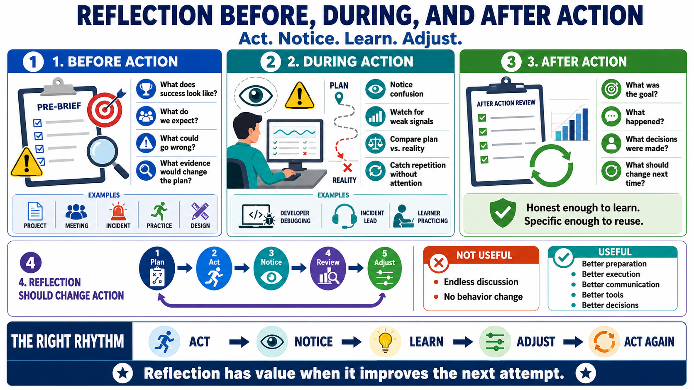

Reflection Before, During, and After Action
Connecting to LMS... Progress: in progress

Narration
Reflection can happen before action, during action, and after action. Reflection before action clarifies goals, assumptions, risks, expectations, and plans. Before a project, meeting, incident response, practice session, or design decision, a short pre-brief can ask what success looks like, what we expect to happen, what could go wrong, and what evidence would change our plan.
Reflection during action is the skill of noticing while work is underway. It means paying attention to confusion, changing conditions, weak signals, and gaps between the plan and reality. A developer may notice that a debugging theory is not fitting the evidence. An incident lead may notice that the room is losing shared understanding. A learner may notice that practice has become repetition without attention.
Reflection after action reviews what happened and what should change. An after-action review can examine the goal, the expected outcome, the actual outcome, the decisions made, the context, and the lessons. The review does not need to be elaborate. It needs to be honest enough to identify a future adjustment and specific enough that the lesson can be used later.
Reflection should support action rather than delay it indefinitely. A learning loop is useful when it changes preparation, execution, communication, tooling, training, or decision-making. If reflection becomes endless discussion without changed behavior, it loses practical value. The right rhythm is act, notice, learn, adjust, and act again with better information.